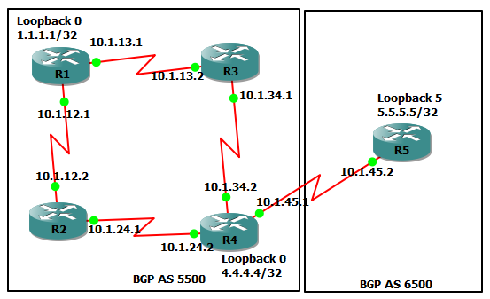

BGP¶
BGP Tuning Attributes¶
What are BGP Attributes¶
The BGP metric is not simple
Attributes are ways that you can ‘tag’ incoming or outgoing BGP routes
Some attributes are WELL-KNOWN (everyone supports), while others are OPTIONAL
Some attributes are MANDITORY (must be in the update), while others are DISCRETIONARY
Some attributes are TRANSITIVE (travel from router to router), while others are NON-TRANSITIVE
Understanding the BGP Attribute Lineup¶
Well-Known Attributes
Autonomous system path (as-path - mandatory)
Next hop address (mandatory)
Origin (mandatory)
Local preferance (discretionary)
Atomic aggregate (discretionary)
Optional Attributes
Aggregator
Multi-exit discriminator (med/metric)
How BGP Finds the Best Path¶
Ignore routes with an inaccessible next hop address
Prefer the path with the highest WEIGHT (CISCO proprietary)
Prefer the path with the highest LOCAL_PREF
Prefer the path that was locally originated via a network command
Prefer the path with the shortest AS_PATH
Prefer the path with the lowest origin type
Prefer the path with the lowest multi-exit discriminator (MED)
Prefer eBGP over iBGP paths
Prefer the path with the lowest IGP metric to the BGP next hop
Determine if multiple paths require installation in the routing table for BGP multipath
When both paths are external, prefer the path that was received first (the oldest one.)
Prefer the route that comes from the BGP router with the lowest router ID
If the originator or router ID is the same for multiple paths, prefer the path with the minimum clister list length
Prefer the path that comes from the lowest neighbour address.
Tuning BGP Attributes¶
Weight (
neighbor x.x.x.x weight 500)AS-Path
Next-Hop Address (
neighbor x.x.x.x next-hop-self)Origin
Local Preference (
bgp default local-preference 700)Metric (
default-metric 200)
Configuring BGP and Tuning¶
_docs/bgp-configuration-and-tuning.zip
Router R1
R1#conf t
R1(config)#int s1/0
R1(config-if)#ip add 10.1.12.1 255.255.255.252
R1(config-if)#no shut
R1(config-if)#int s1/1
R1(config-if)#ip add 10.1.13.1 255.255.255.252
R1(config-if)#no shut
R1(config-router)#int lo0
R1(config-if)#ip add 1.1.1.1 255.255.255.255
R1(config-if)#router bgp 5500
R1(config-router)#no sync
R1(config-router)#neigh 2.2.2.2 remote-as 5500
R1(config-router)#neigh 2.2.2.2 update-source lo0
R1(config-router)#neigh 3.3.3.3 remote-as 5500
R1(config-router)#neigh 3.3.3.3 update-source lo0
R1(config-router)#neigh 10.1.12.2 remote-as 5500
R1(config-router)#neigh 10.1.13.2 remote-as 5500
Router R2
R2#conf t
R2(config)#int s1/0
R2(config-if)#ip add 10.1.12.2 255.255.255.252
R2(config-if)#no shut
R2(config-if)#int s1/1
R2(config-if)#ip add 10.1.14.1 255.255.255.252
R2(config-if)#no shut
R2(config-if)#int s1/2
R2(config-if)#ip add 10.1.24.1 255.255.255.252
R2(config-if)#no shut
R2(config-if)#int l0
R2(config-if)#ip add 2.2.2.2 255.255.255.255
R2(config-if)#router bgp 5500
R2(config-router)#no sync
R2(config-router)#neigh 10.1.12.1 remote-as 5500
R2(config-router)#neigh 10.1.12.1 next-hop-self
R2(config-router)#neigh 10.1.14.2 remote-as 5500
R2(config-router)#neigh 10.1.24.2 remote-as 777
Router R3
R3#conf t
R3(config)#int s1/0
R3(config-if)#ip add 10.1.13.2 255.255.255.252
R3(config-if)#no shut
R3(config-if)#int s1/1
R3(config-if)#ip add 10.1.14.2 255.255.255.252
R3(config-if)#no shut
R3(config-if)#int s1/2
R3(config-if)#ip add 10.1.36.1 255.255.255.252
R3(config-if)#no shut
R3(config-if)#int l0
R3(config-if)#ip add 3.3.3.3 255.255.255.255
R3(config-if)#router bgp 5500
R3(config-router)#no sync
R3(config-router)#neigh 10.1.13.1 remote-as 5500
R3(config-router)#neigh 10.1.14.1 remote-as 5500
R3(config-router)#neigh 10.1.36.2 remote-as 777
R3(config)#ip access-list standard R3ROUTES
R3(config-std-nacl)#permit 150.1.50.0 0.0.0.255
R3(config-std-nacl)#permit 150.2.50.0 0.0.0.255
R3(config-std-nacl)#exit
R3(config)#ip access-list standard R2ROUTES
R3(config-std-nacl)#permit 200.0.0.0 0.255.255.255
R3(config-std-nacl)#exit
R3(config)#route-map LOCAL_PREF permit 10
R3(config-route-map)#match ip address R3ROUTES
R3(config-route-map)#set local
R3(config-route-map)#set local-preference 1000
R3(config-route-map)#exit
R3(config)#route-map LOCAL_PREF permit 20
R3(config-route-map)#match ip address R2ROUTES
R3(config-route-map)#set local-prefe
R3(config-route-map)#set local-preference 10
R3(config-route-map)#exit
R3(config)#route-map LOCAL_PREF permit 30
R3(config-route-map)#router bgp 5500
R3(config-router)#ne
R3(config-router)#nei
R3(config-router)#neighbor 10.1.36.2 route-map LOCAL_PREF in
Router R4
R4#conf t
R4(config)#int s1/0
R4(config-if)#ip add 10.1.24.2 255.255.255.252
R4(config-if)#no shut
R4(config-if)#int s1/1
R4(config-if)#ip add 10.1.48.1 255.255.255.252
R4(config-if)#no shut
R4(config-if)#router bgp 777
R4(config-router)#neigh 10.1.24.1 remote-as 5500
R4(config-router)#neigh 10.1.48.2 remote-as 911
Router R5
R5#conf t
R5(config)#int s1/0
R5(config-if)#ip add 10.1.48.2 255.255.255.252
R5(config-if)#no shut
R5(config-if)#int s1/1
R5(config-if)#ip add 10.1.1.1 255.255.255.252
R5(config-if)#no shut
R5(config-if)#router bgp 911
R5(config-router)#neigh 10.1.48.1 remote-as 777
R5(config-router)#neigh 10.1.1.2 remote-as 711
R5(config)#int l1
R5(config-if)#ip add 150.1.50.1 255.255.255.0
R5(config-if)#int l2
R5(config-if)#ip add 150.2.50.1 255.255.255.0
R5(config-if)#router bgp 911
R5(config-router)#network 150.1.50.0 mask 255.255.255.0
R5(config-router)#network 150.2.50.0 mask 255.255.255.0
Router R6
R6#conf t
R6(config)#int s1/0
R6(config-if)#ip add 10.1.36.2 255.255.255.252
R6(config-if)#no shut
R6(config-if)#int s1/1
R6(config-if)#ip add 10.1.74.1 255.255.255.252
R6(config-if)#no shut
R6(config-if)#router bgp 777
R6(config-router)#neigh 10.1.36.1 remote-as 5500
R6(config-router)#neigh 10.1.74.2 remote-as 711
Router R7
R7#conf t
R7(config)#int s1/0
R7(config-if)#ip add 10.1.74.2 255.255.255.252
R7(config-if)#no shut
R7(config-if)#int s1/1
R7(config-if)#ip add 10.1.1.2 255.255.255.252
R7(config-if)#no shut
R7(config-if)#router bgp 711
R7(config-router)#neigh 10.1.74.1 remote-as 777
R7(config-router)#neigh 10.1.1.1 remote-as 911
R7(config)#int l1
R7(config-if)#ip add 200.50.2.1 255.255.255.0
R7(config-if)#int l2
R7(config-if)#ip add 200.60.2.1 255.255.255.0
R7(config-if)#router bgp 711
R7(config-router)#network 200.50.2.0 mask 255.255.255.0
R7(config-router)#network 200.60.2.0 mask 255.255.255.0
BGP Concepts and Configuration¶
BGP Routing Algorithms¶
BGP is technically a distance vector, but most call it a “Path Vector” protocol.
Without tuning, BGP behaves just like RIP!
BGP Packets and Tables¶
Packets
Open: starts the session
Keepalive: duh..
Update: network reachability exchanges
Notification: something bad has happened; close session
Tables
Neighbour table: the connected BGP friends
BGP table: a list of ALL BGP routes (can be big!)
Routing table: a list of the BEST routes
{kind=link}
BGP Neighbour Configuration¶
Two ways to get networks in BGP:
networkcommandRedistribution
BGP Synchronisation¶
Do not use or advertise a route via IBGP until the same route has been learned from the internal routing protocol.
BGP Next-Hop Processing¶
For EBGP peers: change next hop address on advertised routes
For IBGP peers: do not change next hop address on advertised routes
BGP Configuration¶
{kind=link}
Router R1
R1#conf t
R1(config)#int s1/0
R1(config-if)#ip add 10.1.12.1 255.255.255.0
R1(config-if)#no shut
R1(config-if)#int s1/1
R1(config-if)#ip add 10.1.13.1 255.255.255.0
R1(config-if)#no shut
R1(config-if)#int lo0
R1(config-if)#ip add 1.1.1.1 255.255.255.255
R1(config-if)#router bgp 5500
R1(config-router)#neigh 4.4.4.4 remote-as 5500
R1(config-router)#neigh 4.4.4.4 update-source loopback 0
R1(config-router)#no sync
R1(config-router)#router ospf 1
R1(config-router)#no auto
R1(config-router)#net 10.1.13.0 0.0.0.255 area 0
R1(config-router)#net 10.1.12.0 0.0.0.255 area 0
R1(config-router)#net 1.1.1.1 0.0.0.0 area 0
Router R2
R2(config)#int s1/0
R2(config-if)#ip add 10.1.12.2 255.255.255.0
R2(config-if)#no shut
R2(config-if)#int s1/1
R2(config-if)#ip add 10.1.24.1 255.255.255.0
R2(config-if)#no shut
R2(config-if)#router ospf 1
R2(config-router)#no auto
R2(config-router)#router-id 2.2.2.2
R2(config-router)#net 10.1.12.0 0.0.0.255 area 0
R2(config-router)#net 10.1.24.0 0.0.0.255 area 0
Router R3
R3#conf t
R3(config)#int s1/0
R3(config-if)#ip add 10.1.13.2 255.255.255.0
R3(config-if)#no shut
R3(config-if)#int s1/1
R3(config-if)#ip add 10.1.34.1 255.255.255.0
R3(config-if)#no shut
R3(config-if)#router ospf 1
R3(config-router)#no auto
R3(config-router)#router-id 3.3.3.3
R3(config-router)#net 10.1.13.0 0.0.0.255 area 0
R3(config-router)#net 10.1.34.0 0.0.0.255 area 0
Router R4
R4#conf t
R4(config)#int s1/0
R4(config-if)#ip add 10.1.24.2 255.255.255.0
R4(config-if)#no shut
R4(config-if)#int s1/1
R4(config-if)#int s1/1
R4(config-if)#ip add 10.1.34.2 255.255.255.0
R4(config-if)#no shut
R4(config-if)#int s1/2
R4(config-if)#ip add
R4(config-if)#ip add 10.1.4
R4(config-if)#ip add 10.1.45.1 255.255.255.0
R4(config-if)#no shut
R4(config-if)#int lo0
R4(config-if)#int lo0
R4(config-if)#ip add 4.4.4.4 255.255.255.255
R4(config-if)#router ospf 1
R4(config-router)#no auto
R4(config-router)#net 4.4.4.4 0.0.0.0 area 0
R4(config-router)#net 10.1.24.0 0.0.0.255 area 0
R4(config-router)#net 10.1.24.0 0.0.0.255 area 0
R4(config-router)#net 10.1.34.0 0.0.0.255 area 0
R4(config-router)#net 10.1.34.0 0.0.0.255 area 0
R4(config-router)#router bgp 5500
R4(config-router)#neigh 10.1.45.2 remote-as 6500
R4(config-router)#neigh 1.1.1.1 remote-as 5500
R4(config-router)#neigh 1.1.1.1 update-source lo0
R4(config-router)#ip route 5.5.5.5 255.255.255.255 10.1.45.2
R4(config)#router bgp 5500
R4(config-router)#neigh 5.5.5.5 remote-as 6500
R4(config-router)#neigh 5.5.5.5 update-source lo0
R4(config-router)#neigh 5.5.5.5 ebgp 2
R4(config-router)#neigh 1.1.1.1 next-hop-self
R4(config-router)#no sync
R4(config-router)#do wr
Router R5
R5#conf t
R5(config)#int s1/0
R5(config-if)#ip add 10.1.45.2 255.255.255.0
R5(config-if)#no shut
R5(config-if)#int lo0
R5(config-if)#ip add 5.5.5.5 255.255.255.255
R5(config-if)#router bgp 6500
R5(config-router)#no auto
R5(config-router)#no sync
R5(config-router)#neigh 10.1.45.1 remote-as 5500
R5(config-router)#ip route 4.4.4.4 255.255.255.255 10.1.45.1
R5(config)#access-list 50 permit 200.1.1.0
R5(config)#access-list 50 permit 200.1.2.0
R5(config)#access-list 50 permit 200.1.3.0
R5(config)#access-list 50 permit 200.1.4.0
R5(config)#access-list 50 permit 200.1.5.0
R5(config)#access-list 50 permit 200.1.6.0
R5(config)#route-map FILTER
R5(config-route-map)#match ip add 50
R5(config-route-map)#router bgp 6500
R5(config-router)#redist con route-map FILTER